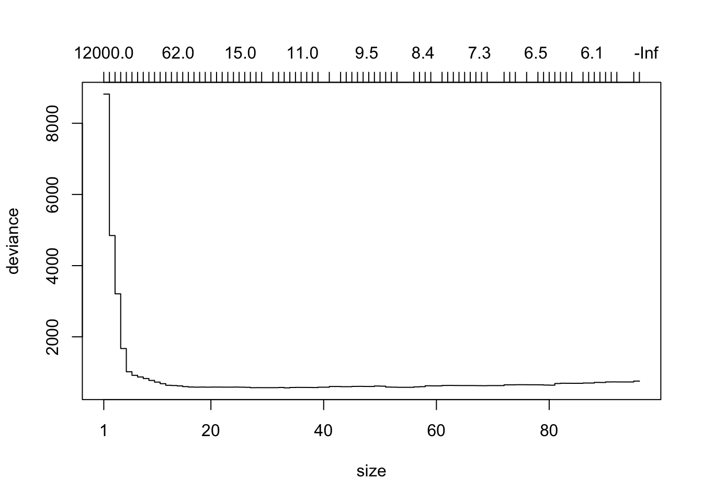
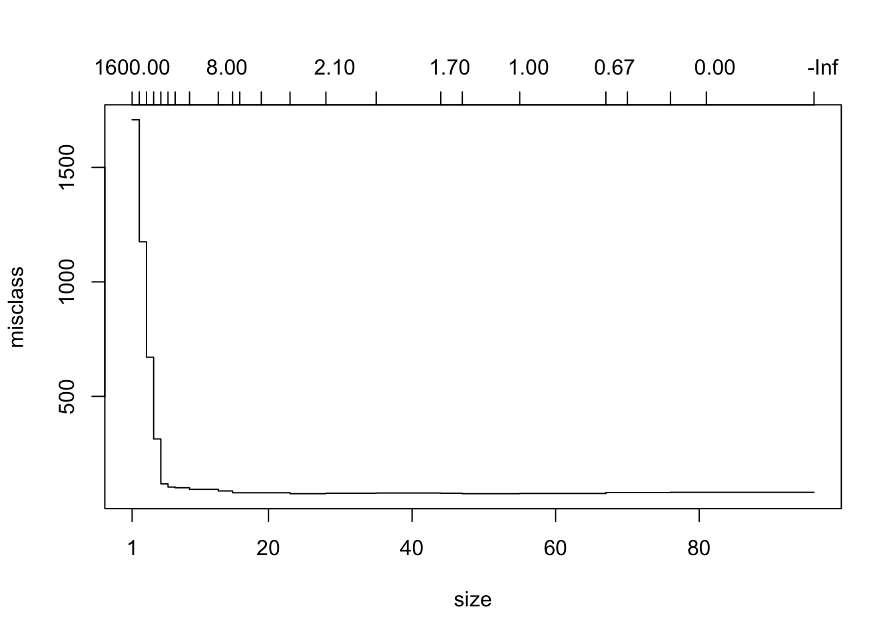

The Shiny app called by the tuneTree() function allowed you to create a number of different tree models on a training set and to compare their performance on a quiz set. You were then free to choose the tree youliked best, and to try the chosen tree on a test set.
But it’s time-consuming to poke around, creating trees one-by-one. Now that we understand the basic idea—tree-performance is a function of tree-size, with trees of “intermediate” size tending to do best—it’s time to let the computer create the trees for you.
prune.tree() provides one way to do this.
Once again we’ll work with the verlander data from the tigerstats package, dividing the data into training, quiz and test sets:
ver2 <- verlander # from the tigerstats package
ver2$season <- NULL
ver2$gamedate <- NULL
dfs <- divideTrainTest(seed = 3030, prop.train = 0.6, prop.quiz = 0.2, data = ver2)
verTrain <- dfs$train
verTest <- dfs$test
verQuiz <- dfs$quizNext we build a large tree, using the training set:
trModbig <- tree(pitch_type ~ ., data = verTrain,
control = tree.control(
nobs = nrow(verTrain),
mincut = 2,
minsize = 4,
mindev = 0.0002
))
summary(trModbig)##
## Classification tree:
## tree(formula = pitch_type ~ ., data = verTrain, control = tree.control(nobs = nrow(verTrain),
## mincut = 2, minsize = 4, mindev = 2e-04))
## Variables actually used in tree construction:
## [1] "speed" "pfx_x" "pfx_z" "pz" "balls" "pitches" "strikes"
## [8] "px"
## Number of terminal nodes: 96
## Residual mean deviance: 0.04178 = 379.7 / 9088
## Misclassification error rate: 0.00882 = 81 / 9184We get a tree with 96 nodes.
prune.tree()Noe we bring in the prune.tree() function, and plot the resulting object:
prtrMod <- prune.tree(trModbig, newdata = verQuiz, method = "deviance")
plot(prtrMod)
prune.tree() takes the tree model and snips away nodes one-by-one, creating successively smaller sub-trees. For each possible number of terminal nodes it uses a sophisticated method to select a “best”" sub-tree having that number of terminal nodes to appear in the plot. The resulting plot—covering many trees having from 1 to 96 terminal nodes—shows the number of terminal nodes on the bottom horizontal axis and the total deviance of the tree—on the quiz set—on the vertical axis. (The top horizontal axis gives the value of a “tuning constant” used to find the best tree at each size. You can ignore this axis if you like.)
It is also possible to measure performance in terms of mis-classifications on the quiz set, as follows:
prtrModmisclass <- prune.tree(trModbig, newdata = verQuiz, method = "misclass")
plot(prtrModmisclass)
Either way, we get the U-shape that we saw in the tuneTree() app. Keep in mind, though, that the trees aren’t built by varying the parameters in tree.control(): instead they are all found by snipping nodes off of the original large tree—pruning the tree, as it were.
Let’s say that we decide to measure performance by deviance on the quiz set. From the plot it appears that the deviance is lowest somewhere around node sizes 15 to 40 or so.
Here’s how to get a closer look. The object prtrMod is a list consisting of several components.
str(prtrMod)## List of 4
## $ size : int [1:118] 165 163 158 157 155 154 153 150 148 146 ...
## $ dev : num [1:118] 1120 1108 1097 1098 1077 ...
## $ k : num [1:118] -Inf 1.48 1.73 1.9 2.23 ...
## $ method: chr "deviance"
## - attr(*, "class")= chr [1:2] "prune" "tree.sequence"size and dev give horizontal and vertical coordinates of each sub-tree in the plot. Let’s make a data frame for the trees having node sizes from 15 to 40:
size <- prtrMod$size
mediumSizes <- size[size >= 15 & size <= 40]
deviations <- prtrMod$dev[size >= 15 & size <= 40]
df <- data.frame(size = mediumSizes, dev = deviations)
df## size dev
## 1 39 584.7448
## 2 38 574.9815
## 3 37 577.6671
## 4 36 578.5656
## 5 35 579.4408
## 6 34 576.8950
## 7 33 566.7295
## 8 32 576.7832
## 9 31 571.9241
## 10 29 571.5575
## 11 28 572.4138
## 12 27 570.9038
## 13 26 581.8818
## 14 25 585.1952
## 15 24 588.4180
## 16 23 586.3522
## 17 22 586.0289
## 18 21 588.1146
## 19 20 588.1634
## 20 19 585.6794
## 21 18 588.3239
## 22 17 586.1445
## 23 16 589.8194
## 24 15 601.1198The smallest deviation occurs at 33 nodes, but this seems to be a blip. We might as well look at 27 nodes, which gives nearly as small a deviation.
Again it’s a judgement call, and really all we need is something in the neighborhood. Let’s say that we will aim for the sub-tree having 27 nodes. Unfortunately we cannot recover it precisely, but we can find another good tree of the same size, using the best argument:
bestTree <- prune.tree(trModbig, newdata = verQuiz, best = 27)The object bestTree is a regular tree model. We can summarize it, for example:
summary(bestTree)##
## Classification tree:
## snip.tree(tree = trModbig, nodes = c(56L, 45L, 33L, 87L, 41L,
## 29L, 114L, 34L, 44L, 19L, 42L, 36L, 37L, 31L, 30L, 115L, 27L,
## 53L, 25L, 47L, 46L, 35L, 40L, 52L))
## Variables actually used in tree construction:
## [1] "speed" "pfx_x" "pz" "pfx_z" "px"
## Number of terminal nodes: 27
## Residual mean deviance: 0.1053 = 964.1 / 9157
## Misclassification error rate: 0.02101 = 193 / 9184Note that the deviance is 964.1, but that is for the training set, not the quiz set!
Now we have chosen a tree, we should try it out on the test set.
tryTree(bestTree, testSet = verTest, truth = verTest$pitch_type)## Residual mean deviance: 0.1143 = 346.9 / 3036
## Misclassification error rate: 0.01894 = 58 / 3062
## Confusion matrix:
## truth
## prediction CH CU FF FT SL
## CH 497 0 0 0 6
## CU 0 537 0 0 6
## FF 0 0 1340 11 2
## FT 3 0 23 404 0
## SL 3 4 0 0 226